Week 4
By the end of this week, you should be able to:
If only \(s \ll p\) features are predictive, we would ideally fit the model using only those \(s\) features.
So far, we have defined our regression estimates by asking them to minimize an objective function.
For ordinary least squares:
\[ \min_{\boldsymbol{\beta}} \sum_{i=1}^n \left(y_i-\beta_0-\sum_{j=1}^p x_{ij}\beta_j\right)^2 \]
For ridge regression:
\[ \min_{\boldsymbol{\beta}} \left\{ \sum_{i=1}^n \left(y_i-\beta_0-\sum_{j=1}^p x_{ij}\beta_j\right)^2 + \lambda\sum_{j=1}^p \beta_j^2 \right\} \]
For the Lasso:
\[ \min_{\boldsymbol{\beta}} \left\{ \sum_{i=1}^n \left(y_i-\beta_0-\sum_{j=1}^p x_{ij}\beta_j\right)^2 + \lambda\sum_{j=1}^p |\beta_j| \right\} \]
Suppose we want to solve
\[ \widehat{\mathbf w} = \arg\min_{\mathbf w\in\Theta} \mathcal J(\mathbf w;\mathcal D^{\text{train}}) := \arg\min_{\mathbf w\in\Theta} \mathcal J(\mathbf w). \]
where
The optimal solution, if it exists in the interior, must occur at a critical point i.e. point to which the derivative is zero (partial derivatives to zero for multi-dimensional parameter)
A partial derivative measures how a multivariable function changes with respect to one argument while holding the others fixed.
For example,
\[ \frac{\partial}{\partial w_1}\mathcal J(w_1,w_2) = \lim_{h\to 0} \frac{ \mathcal J(w_1+h,w_2)-\mathcal J(w_1,w_2) }{h}. \]
The minimum must occur at a point where the partial derivatives are zero
\[ \nabla \mathcal J(\mathbf w) = \begin{bmatrix} \frac{\partial \mathcal J}{\partial w_1}\\ \vdots\\ \frac{\partial \mathcal J}{\partial w_p} \end{bmatrix} = \mathbf 0. \]
This implies a system of equations, which we can solve analytically in some scenarios.
We may also use optimization techniques that iteratively get us closer to the solution.
For ordinary least squares,
\[ \widehat{\mathbf w} = \arg\min_{\mathbf w\in\mathbb R^p} \mathcal J(\mathbf w) = \arg\min_{\mathbf w\in\mathbb R^p} \|\mathbf y-\mathbf X\mathbf w\|_2^2. \]
The partial derivatives w.r.t \(\mathbf{w}\) are
\[ \frac{\partial \mathcal J}{\partial \mathbf w} = -2\mathbf X^\top(\mathbf y-\mathbf X\mathbf w). \]
(If not familiar with multi-dimensional derivatives, calculate \(\frac{\partial \mathcal{J}}{\partial w_j}\) and stack them together)
Setting this equal to zero gives
\[ \mathbf X^\top\mathbf X\widehat{\mathbf w} = \mathbf X^\top\mathbf y, \]
so, when the inverse exists:
\[ \boxed{ \widehat{\mathbf w} = (\mathbf X^\top\mathbf X)^{-1}\mathbf X^\top\mathbf y } \]
For ridge regression,
\[ \widehat{\mathbf w}^{\,R}_\lambda = \arg\min_{\mathbf w\in\mathbb R^p} \left\{ \|\mathbf y-\mathbf X\mathbf w\|_2^2 + \lambda\|\mathbf w\|_2^2 \right\}. \]
The partial derivatives w.r.t \(\mathbf{w}\) are
\[ \frac{\partial \mathcal J}{\partial \mathbf w} = -2\mathbf X^\top(\mathbf y-\mathbf X\mathbf w) + 2\lambda\mathbf w. \]
Setting this equal to zero gives
\[ (\mathbf X^\top\mathbf X+\lambda\mathbf I_p) \widehat{\mathbf w}^{\,R}_\lambda = \mathbf X^\top\mathbf y, \]
and therefore
\[ \boxed{ \widehat{\mathbf w}^{\,R}_\lambda = (\mathbf X^\top\mathbf X+\lambda\mathbf I_p)^{-1} \mathbf X^\top\mathbf y } \]
Now consider a second way to solve
\[ \widehat{\mathbf w} = \arg\min_{\mathbf w}\mathcal J(\mathbf w). \]
which is more broadly applicable: gradient descent.
Many times, we do not have a convenient direct solution to
\[ \frac{\partial \mathcal{J}}{\partial \mathbf{w}} = 0. \]
Gradient descent is an iterative algorithm.
Rather than solving directly for the optimum, we repeatedly update the parameters so that we move toward a smaller value of the objective.
We initialize \(\mathbf w\) at some reasonable starting value, (e.g. all zeros) and repeatedly adjust it in the direction of steepest descent of the loss function \(\mathcal J\).
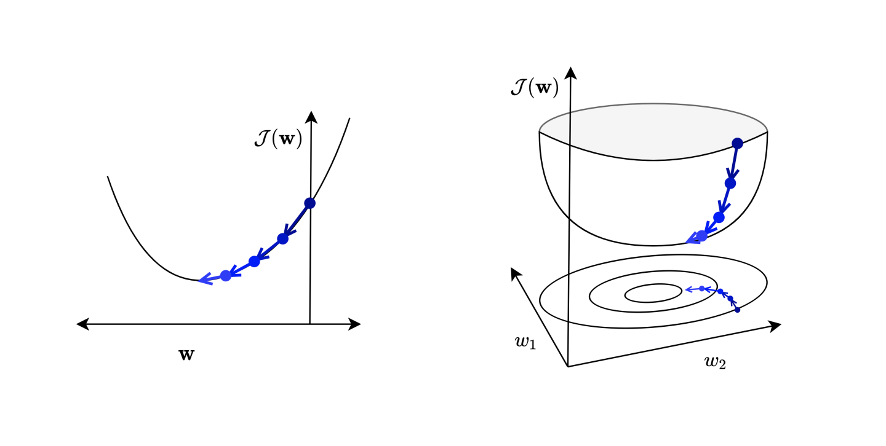
What is the direction of the steepest descent of \(\mathcal{J}(\mathbf{w})\) at \(\mathbf{w}\)?
By definition, the direction of the greatest increase in \(\mathcal{J}(\mathbf{w})\) at \(\mathbf{w}^{(0)}\) is its gradient:
\[ \frac{\partial \mathcal{J}(\mathbf{w})}{\partial \mathbf{w}}\bigg|_{\mathbf{w}=\mathbf{w}^{(0)}} \in \mathbb{R}^p \]
So, we update \(\mathbf{w}\) in the opposite direction of the gradient at \(\mathbf{w}^{(0)}\):
\[ \boxed{ \mathbf w^{(1)} = \mathbf w^{(0)} - \alpha \frac{\partial \mathcal{J}(\mathbf{w})}{\partial \mathbf{w}}\bigg|_{\mathbf{w}=\mathbf{w}^{(0)}} } \] for some \(\alpha > 0\).
If \(\alpha\) is chosen small, then \[ \mathcal{J}(\mathbf{w}^{(1)}) < \mathcal{J}(\mathbf{w}^{(0)}) \] unless \(\frac{\partial \mathcal{J}(\mathbf{w})}{\partial \mathbf{w}}\) at \(\mathbf{w}^{(0)}\) is zero.
For iterations \(k=0,1,2,\ldots\), and for each \(j\in\{1,\ldots,p\}\),
\[ \boxed{ w_j^{(k+1)} \leftarrow w_j^{(k)} - \alpha \left. \frac{\partial \mathcal J}{\partial w_j} \right|_{\mathbf w=\mathbf w^{(k)}} } \]
The learning rate (or step size), \(\alpha\), controls the size of each update.
Typical values may be small, such as \(0.01\) or \(0.0001\), although the appropriate scale depends on the problem.
For OLS,
\[ \mathcal J(\mathbf w) = \|\mathbf y-\mathbf X\mathbf w\|_2^2. \] :::{.fragment} Update rule in vector form at the \((k+1)\)th iteration:
\[ \begin{aligned} \mathbf{w}^{(k+1)} &\leftarrow \mathbf{w}^{(k)} - \alpha \left. \frac{\partial \mathcal{J}}{\partial \mathbf{w}} \right|_{\mathbf{w}=\mathbf{w}^{(k)}} \\ &= \mathbf{w}^{(k)} + 2\alpha \mathbf{X}^{\top} \left( \mathbf{y} - \mathbf{X}\mathbf{w}^{(k)} \right). \end{aligned} \]
Initialization: \(\mathbf{w}^{(0)}=0\) :::
For ridge regression,
\[
\mathcal J(\mathbf w)
=
\|\mathbf y-\mathbf X\mathbf w\|_2^2
+
\lambda\|\mathbf w\|_2^2.
\]
Update rule in vector form at the \((k+1)\)th iteration: \[ \begin{aligned} \mathbf{w}^{(k+1)} &\leftarrow \mathbf{w}^{(k)} - \alpha \left. \frac{\partial \mathcal{J}}{\partial \mathbf{w}} \right|_{\mathbf{w}=\mathbf{w}^{(k)}} \\ &= \mathbf{w}^{(k)} + 2\alpha \mathbf{X}^{\top} \left( \mathbf{y} - \mathbf{X}\mathbf{w}^{(k)} \right) - 2\alpha\lambda\mathbf{w}^{(k)}. \end{aligned} \]
Initialization: \(\mathbf{w}^{(0)}=0\)
The final term is the contribution from the ridge penalty and pulls the coefficients toward zero.
For the lasso,
\[ \mathcal J(\mathbf w) = \|\mathbf y-\mathbf X\mathbf w\|_2^2 + \lambda\|\mathbf w\|_1. \]
The difficulty is that
\[ \|\mathbf w\|_1 = \sum_{j=1}^p |w_j| \]
is not differentiable at \(w_j=0\).
So ordinary gradient descent cannot be applied in exactly the same way at those points.
For convex functions that are not differentiable everywhere, we can use a subgradient at \(\mathbf{x}\), defined as:
\[ \partial \mathcal{J}(\mathbf{x}) := \left\{ v : \mathcal{J}(\mathbf{y}) \geq \mathcal{J}(\mathbf{x}) + (\mathbf{y}-\mathbf{x})^{\top}v, \quad \forall \mathbf{y}\in\Theta \right\}. \]
For \(f(x)=|x|\),
\[ \partial f(x) = \begin{cases} 1, & x>0,\\ -1, & x<0,\\ (-1,1), & x=0. \end{cases} \]
For \(f(\mathbf{x})=\|\mathbf x\|_1\),
\[ [\partial f(\mathbf{x})]_j = \begin{cases} 1, & x_j>0,\\ -1, & x_j<0,\\ (-1,1), & x_j=0. \end{cases} \]
This gives us a generalized notion of “slope” even at the kink at zero.
For the Lasso,
\[ \mathcal J(\mathbf w) = \|\mathbf y-\mathbf X\mathbf w\|_2^2 + \lambda\|\mathbf w\|_1. \]
Update rule in vector form at the (\(k+1\))th iteration:
\[ \begin{aligned} \mathbf{w}^{(k+1)} &\leftarrow \mathbf{w}^{(k)} - \alpha \left. \frac{\partial \mathcal{J}}{\partial \mathbf{w}} \right|_{\mathbf{w}=\mathbf{w}^{(k)}} \\ &= \mathbf{w}^{(k)} + 2\alpha \mathbf{X}^{\top} \left( \mathbf{y} - \mathbf{X}\mathbf{w}^{(k)} \right) - \left. \alpha \lambda \, \partial\left(\lVert \mathbf{w}\rVert_1\right) \right|_{\mathbf{w}^{(k)}}. \end{aligned} \] Initialization: \(\mathbf{w}^{(0)}=0\)
Because gradient descent is iterative, we need a stopping criterion.
We might stop when:
\[ \left| \mathcal J(\mathbf w^{(k+1)}) - \mathcal J(\mathbf w^{(k)}) \right| \le \varepsilon; \] :::{.fragment} 2. the parameters barely change,
\[ \|\mathbf w^{(k+1)}-\mathbf w^{(k)}\|_2 \le \varepsilon; \] :::
Recall that we are trying to solve
\[ \widehat{\mathbf w} = \arg\min_{\mathbf w\in\Theta} \mathcal J(\mathbf w). \]
A set \(S\) is convex if for any \(\mathbf x_0,\mathbf x_1\in S\),
\[ (1-\lambda)\mathbf x_0+\lambda\mathbf x_1\in S \qquad \text{for every } 0\le\lambda\le 1. \]
In words:
If you draw a straight line between any two points in the set, the entire line segment stays inside the set.
The Euclidean space \(\mathbb R^p\) is convex.
A function \(f\) is convex if for any \(x_0,x_1\) in its domain,
\[ f\left((1-\lambda)x_0+\lambda x_1\right) \le (1-\lambda)f(x_0)+\lambda f(x_1) \]
for every \(\lambda\in[0,1]\).
Intuitively, a convex function is bowl-shaped.
Why do we care?
For a convex objective, every local minimum is also a global minimum.
\[ f''(x)\ge 0 \]
for all \(x\), then \(f\) is convex.
For example, the least squares loss function \((y-t)^2\) is convex as a function of \(t\)
Likewise, the loss function in logistic regression
\[ -yt+\log(1+e^t) \]
is convex in \(t\).
If \(f\) is a convex function and \(g\) is a linear function, then both \(f \circ g\) and \(g \circ f\) are convex.
For example, the least squares loss \((y-\mathbf x^\top\mathbf w)^2\) is convex as a function of \(\mathbf w\).
Likewise, the negative log-likelihood under logistic regression,
\[ -y\mathbf x^\top\mathbf w + \log\left(1+e^{\mathbf x^\top\mathbf w}\right), \]
is convex in \(\mathbf w\).
Therefore sums of these losses over observations are also convex.
The linear regression objective
\[ \sum_{i=1}^n (y_i-\mathbf x_i^\top\mathbf w)^2 \]
is convex.
So why use gradient descent when a closed-form solution exists?
When \(p\) is large, directly computing
\[ (\mathbf X^\top\mathbf X)^{-1}\mathbf X^\top\mathbf y \]
may be expensive.
A gradient descent update can be computationally attractive because it avoids explicitly inverting a large matrix.
The learning rate \(\alpha\) is a hyperparameter that we need to tune. Its value can dramatically affect optimization.
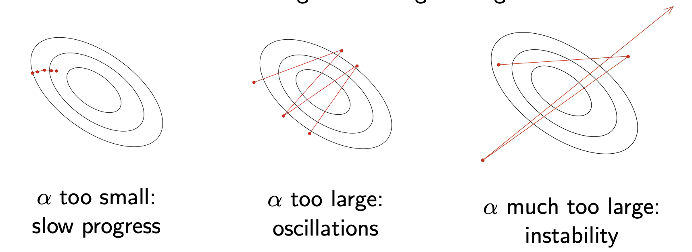
We often try several candidate learning rates and examine their optimization behaviour.
A useful diagnostic is to look at the training cost: plot the training cost as a function of iteration.
Training curves can help identify:
Important: the training cost could be used to check whether the optimization problem reaches certain convergence. But:
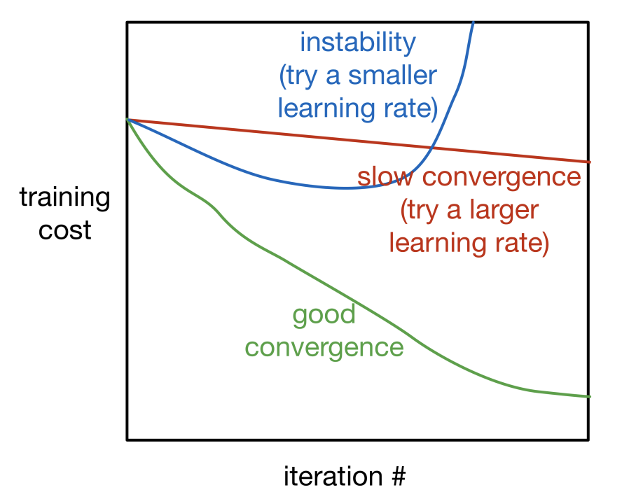
Recall for OLS that:
\[
\widehat{\mathbf w}^{(k+1)}
=
\widehat{\mathbf w}^{(k)}
+
\alpha
\sum_{i=1}^n
\left[
y_i-\mathbf x_i^\top\widehat{\mathbf w}^{(k)}
\right]\mathbf x_i.
\]
Computing the gradient requires summing over all of the training examples, which can be done via matrix / vector operations.
The fact that it uses all training samples is known as batch training.
Batch gradient descent can be expensive when \(n\) is extremely large.
Stochastic gradient descent (SGD) uses only one randomly selected training example for each update.
At iteration \(k\):
For OLS,
\[ \boxed{ \widehat{\mathbf w}^{(k+1)} = \widehat{\mathbf w}^{(k)} + \alpha \left[ y_i-\mathbf x_i^\top\widehat{\mathbf w}^{(k)} \right]\mathbf x_i } \]
Pros
Cons
Compromise Approach
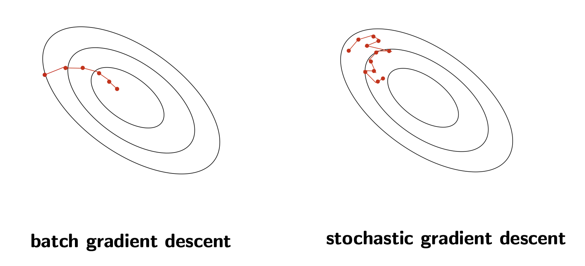
With stochastic optimization, the learning rate also controls the size of the fluctuations caused by noisy gradient estimates.
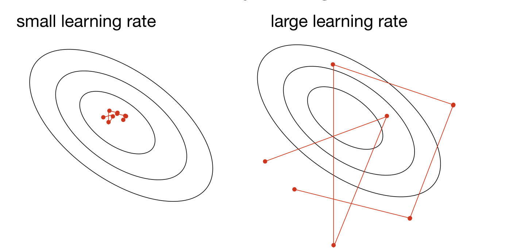
Typical strategy
Gradient descent gives us a general way to solve optimization problems of the form
\[ \widehat{\mathbf w} = \arg\min_{\mathbf w} \mathcal J(\mathbf w). \]
The basic recipe is:
\[ \boxed{ \text{initialize} \;\longrightarrow\; \text{compute gradient} \;\longrightarrow\; \text{step downhill} \;\longrightarrow\; \text{repeat} } \]
Key ideas:
So far, we’ve mainly focused on linear models.
They are simply to describe and implement, and have advantages over other approaches in terms of interpretation and inference.
However, because the linearity assumption is almost always an approximation, linear regression can have significant limitations in terms of predictive power.
We can improve upon least squares using ridge regression and the lasso by reducing the complexity of the model (i.e. the variance of the estimates), but we are still using a linear model which can only be improved so much!
Suppose \(X=(X_1,X_2)\). A standard linear model is
\[ Y=\beta_0+\beta_1X_1+\beta_2X_2+\varepsilon. \]
What about
\[ Y=\beta_0+\beta_1X_1+\beta_2X_2+\beta_3X_1^2+\beta_4X_2^2+\beta_5X_1X_2+\varepsilon? \]
This model is nonlinear in the features, but still linear in the parameters \(\boldsymbol\beta=(\beta_0,\ldots,\beta_5)^\top\).
Because the model remains linear in \(\boldsymbol\beta\), we can still use familiar tools:
Estimation
Model building
The linear model framework is more flexible than a straight-line relationship.
We consider the following extensions to relax the linearity assumption in the feature space:
For one predictor \((p=1)\):
For several predictors \((p>1)\):
Polynomial regression extends the linear model
\[y_i = \beta_0 + \beta_1x_i + \epsilon_i\] to settings where the relationship between the predictors and the response is non linear by adding extra predictors, obtained by raising each of the original predictors to a power:
\[ y_i=\beta_0+\beta_1x_i+\beta_2x_i^2+\cdots+\beta_dx_i^d+\varepsilon_i. \]
Note: High-degree polynomials can behave erratically near the boundaries and are particularly unreliable for extrapolation.
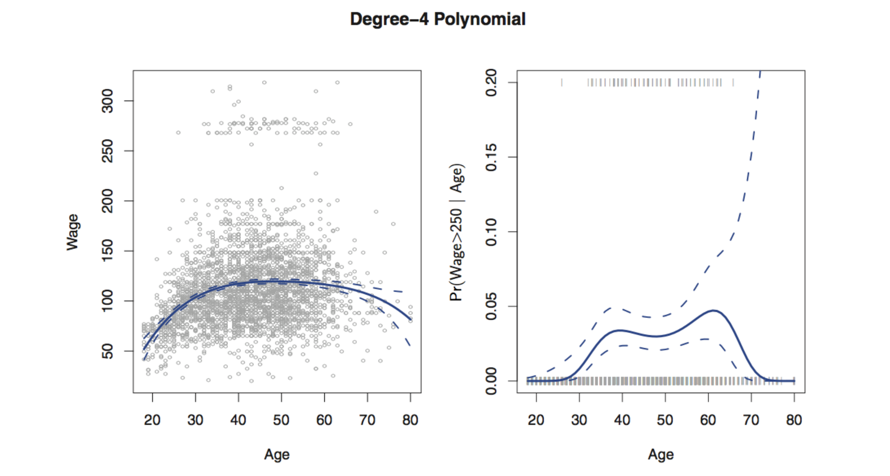
Polynomial regression imposes a global shape. A step function instead divides the range of \(X\) into regions.
For pre-specified \(K\) cut points \(c_1<\cdots<c_K\), define
\[ \begin{aligned} C_0(X)&=I(X<c_1),\\ C_1(X)&=I(c_1\le X<c_2),\\ &\ \vdots\\ C_K(X)&=I(c_K\le X). \end{aligned} \]
These \(K+1\) dummy variables sum to 1.
Using the first interval as the reference category,
\[ y_i=\beta_0+\beta_1C_1(x_i)+\cdots+\beta_KC_K(x_i)+\varepsilon_i. \]
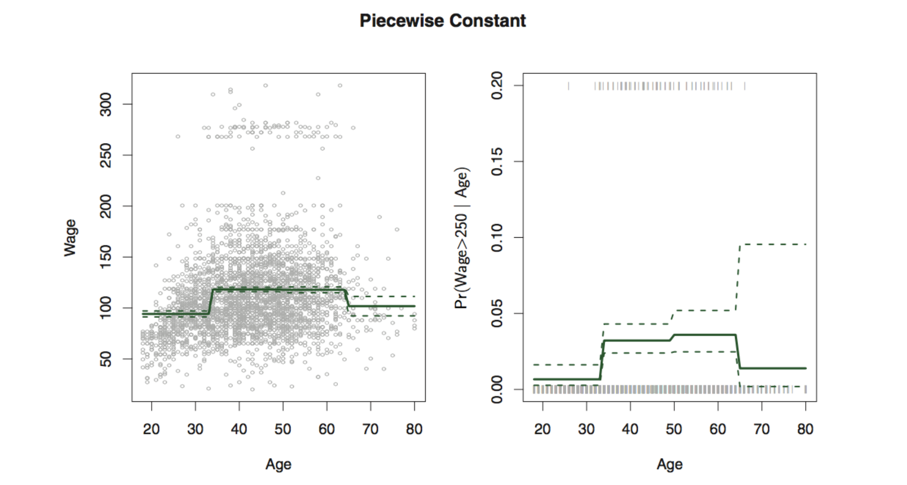
Strengths
Limitations
The models we have just discussed are all special cases of a basis function approach.
The idea is to have a family of functions/transformations that can be applied to a variable, \(X\), and instead of fitting a linear model in \(X\), we fit
\[ y_i=\beta_0+\sum_{k=1}^{M}\beta_k b_k(x_i)+\varepsilon_i, \]
where the \(b_k(\cdot)\) are the known functions/transformations (we specify them ahead of time).
| Model | Example basis functions |
|---|---|
| Polynomial | \(b_k(x)=x^k\) |
| Step function | \(b_k(x)=C_k(x)\) |
| Linear spline | \(b_1(x)=x\), \(b_{k+1}(x)=(x-\xi_k)_+\) |
Once the basis is constructed, fitting the model is just linear regression.
A very common choice for a basis function is a regression spline, which we discuss next.
Instead of fitting one polynomial over the full range of \(X\), fit different polynomials in different regions.
\[ y_i = \begin{cases} \beta_{01} + \beta_{11}x_i + \beta_{21}x_i^2 + \beta_{31}x_i^3 + \epsilon_i, & \text{if } x_i < c, \\[6pt] \beta_{02} + \beta_{12}x_i + \beta_{22}x_i^2 + \beta_{32}x_i^3 + \epsilon_i, & \text{if } x_i \geq c. \end{cases} \]
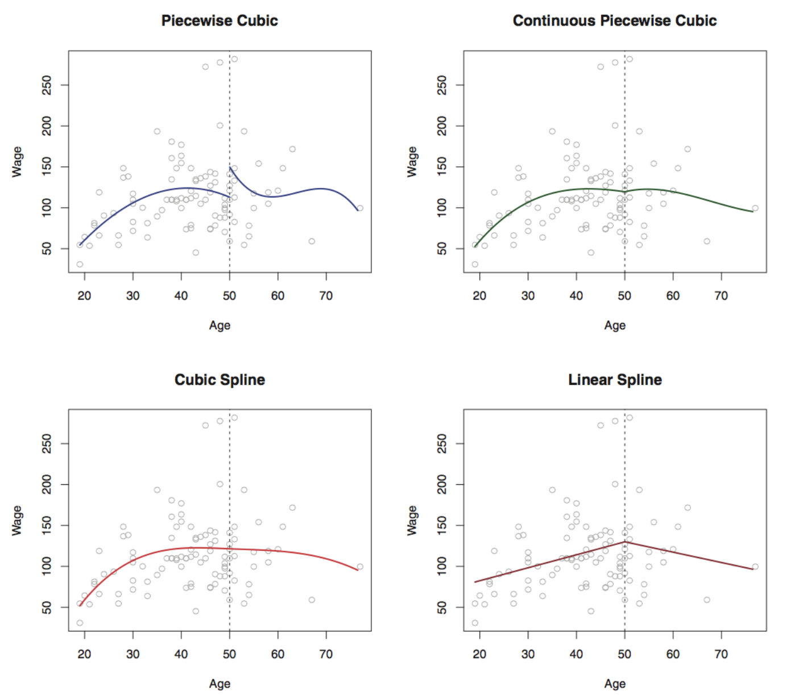
Without constraints at the knots, adjacent polynomial pieces may fail to meet, or may meet with sharp corners.
At each knot, we can impose constraints:
The constrained polynomials are called splines.
A degree-\(d\) spline is a piecewise degree-\(d\) polynomial, with continuity in derivatives up to degree \(d-1\) at each knot.
How can we construct the degree-\(d\) spline?
A linear spline has piecewise linear functions continuous at each knot. That is, with knots at \(\xi_1<\cdots<\xi_K\),
\[ y_i=\beta_0+\beta_1x_i+\sum_{k=1}^{K}\beta_{k+1}(x_i-\xi_k)_+ +\varepsilon_i, \]
where
\[ (x_i-\xi_k)_+= \begin{cases} x_i-\xi_k, & x_i>\xi_k,\\ 0, & x_i\le \xi_k. \end{cases} \] is called the truncated power basis function, and \(\xi_k\) is the knot.
Interpretation of \(\beta_1\): the averaged increase of \(Y\) associated with one unit of \(X\) for \(X < \xi_1\).
For example, with three knots, we start off with a basis for a linear polynomial, then add one truncated power basis function per knot:
\[ y = \beta_0+\beta_1x +\beta_2(x-\xi_1)_+ +\beta_3(x-\xi_2)_+ +\beta_4(x-\xi_3)_+. \]
Therefore, the slope in each region is
\[ \begin{aligned} x \leq \xi_1 &: \quad \beta_1, \\[4pt] \xi_1 < x \leq \xi_2 &: \quad \beta_1+\beta_2, \\[4pt] \xi_2 < x \leq \xi_3 &: \quad \beta_1+\beta_2+\beta_3, \\[4pt] x > \xi_3 &: \quad \beta_1+\beta_2+\beta_3+\beta_4. \end{aligned} \]
Because each new term \((x-\xi_k)_+\) is zero at the knot \(\xi_k\), the pieces meet at each knot. Thus, the fitted function is continuous, making it a spline.
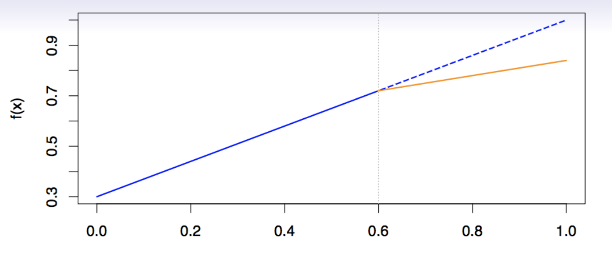
The truncated linear term is zero before the knot and grows linearly afterward. Adding it to the original line changes the slope without creating a jump.
A cubic spline uses piecewise cubic polynomials with continuous first and second derivatives at each knot. Again, we start off with a basis for a cubic polynomial, then add one truncated power basis function per knot.
That is, with \(K\) knots at \(\xi_1 < \xi_2 < ... <\xi_k\),
\[y_i = \beta_0 + \beta_1b_1(x_i) + \beta_2b_2(x_i) + ... + \beta_{K+3}b_{K+3}(x_i) + \epsilon_i\] where \(b_k(.)\) are basis functions
\[ b_1(x)=x,\quad b_2(x)=x^2,\quad b_3(x)=x^3, \]
\[ b_{k+3}(x)=(x-\xi_k)_+^3,\qquad k=1,\ldots,K. \]
But wait.. we know a spline must have continuity in derivatives up to degree \(d-1\) at each knot.
How can we check this condition?
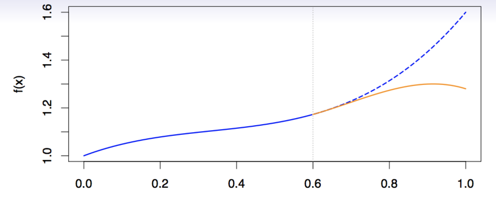
The truncated cubic term changes the curve only after the knot. The pieces join smoothly in value, slope, and curvature.
A natural spline is a regression spline with additional boundary constraints: the function is required to be linear at the boundary.
This reduces instability near the boundaries, where there are fewer observations and ordinary cubic splines can have high variance.
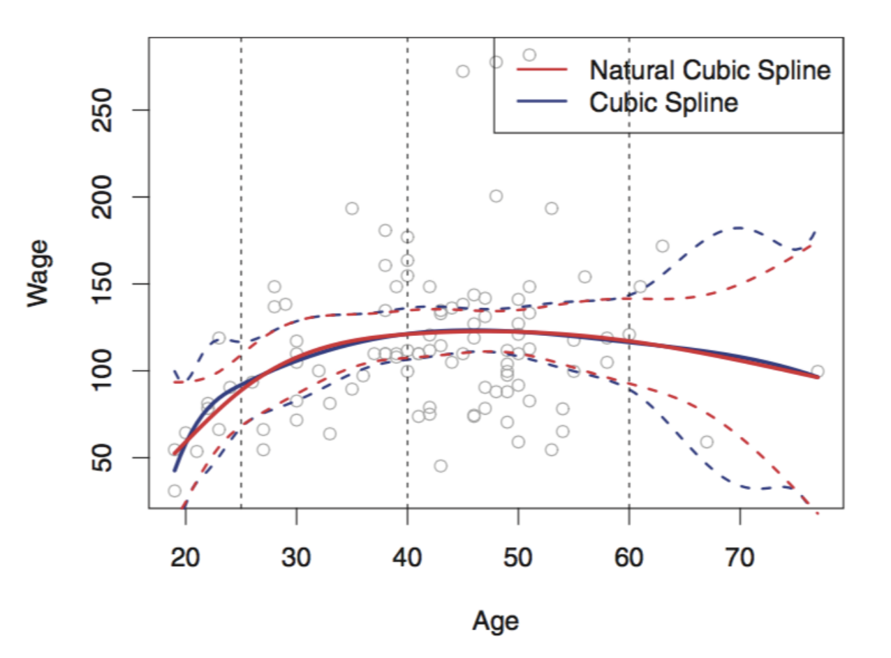
Choosing the number and locations of the knots
Polynomial regressions and step functions are special cases of splines
Another variant: Smoothing spline (ISLR 7.5)
To predict at \(X=x_0\):
\[ \widehat f(x_0)=\frac{1}{k}\sum_{i\in N_k(x_0)}y_i. \]
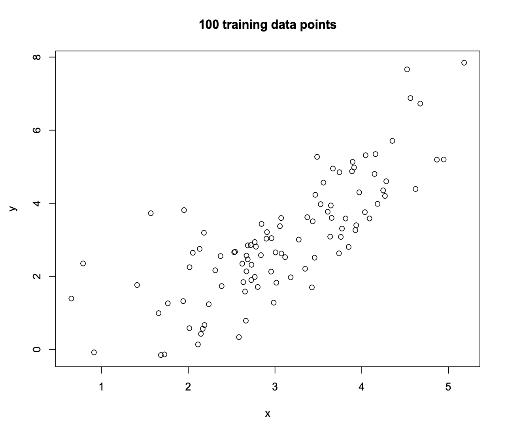
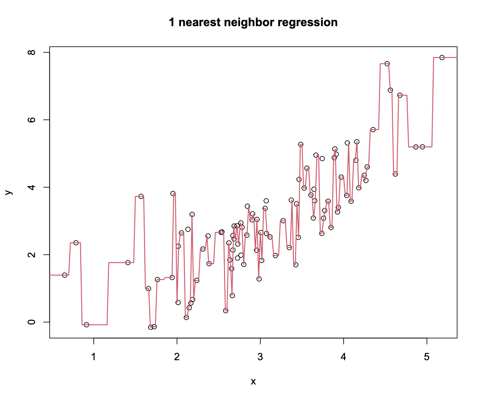
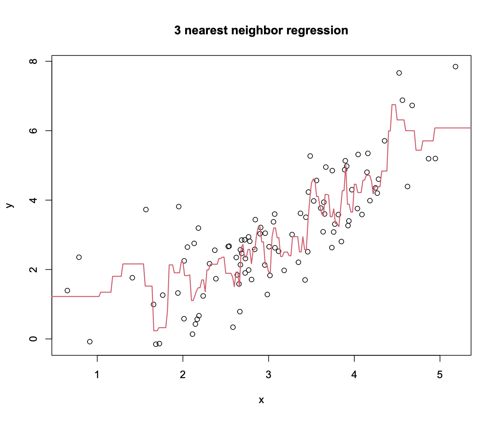
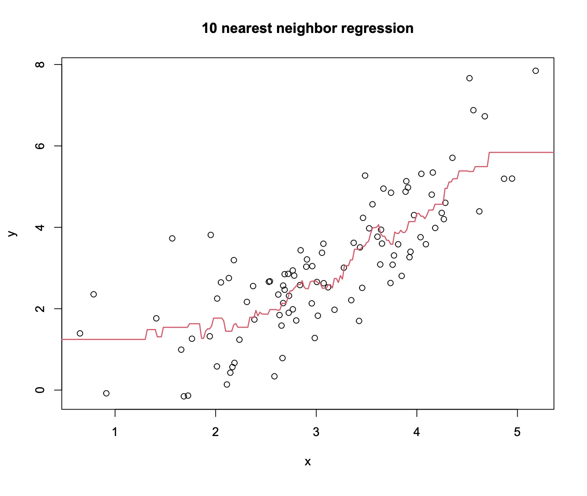
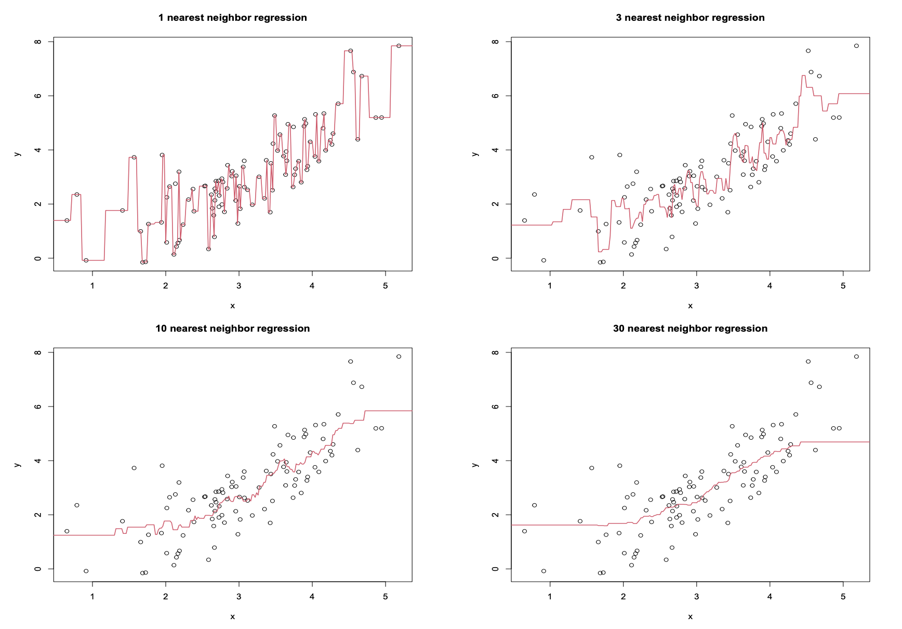
| Smaller \(k\) | Larger \(k\) |
|---|---|
| More flexible | Smoother |
| Lower bias | Higher bias |
| Higher variance | Lower variance |
Choose \(k\) using cross-validation.
The best \(k\) is the one that gives the lowest estimated test error (not necessarily the smoothest-looking curve).
Ordinary \(k\)-NN assigns equal weight \(1/k\) to every neighbor.
More generally, we can choose a weight such that
\[ \widehat f(x_0)=\sum_{i\in N_k(x_0)}K(x_i,x_0)y_i, \]
with
\[ K(x_i,x_0)\ge 0,\qquad \sum_{i\in N_k(x_0)}K(x_i,x_0)=1. \]
Nearby observations can be given more influence than observations near the edge of the neighborhood.
One popular choice is the so-called inverse distance weighting (IDW).
Of course there are other more sophisticated weighting schemes.
For \(x_i\in N_k(x_0)\), define
\[ d_i=\lVert x_i-x_0\rVert_2, \qquad \operatorname{ID}_i=\frac{1}{d_i}. \]
Normalize the inverse distances:
\[ K(x_i,x_0)=\frac{\operatorname{ID}_i} {\sum_{j\in N_k(x_0)}\operatorname{ID}_j}. \]
In implementation, handle \(d_i=0\) separately: if the target matches a training point exactly, that response can receive all the weight.
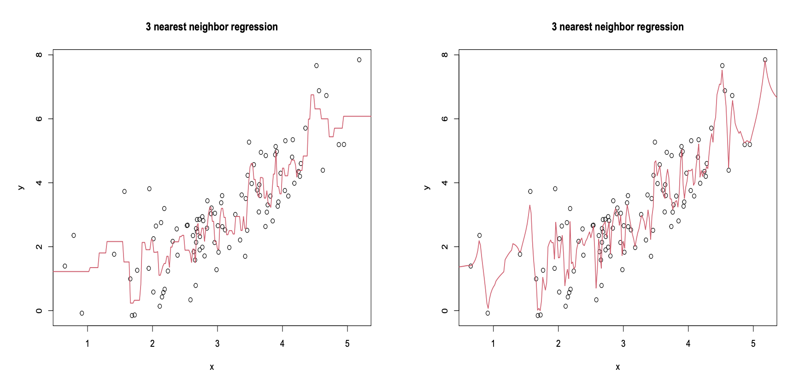
Recall that \(k\)NN predicts by using the local average of the responses
\[ \widehat f(x_0)=\frac{1}{k}\sum_{i\in N_k(x_0)}y_i. \]
Local linear regression instead fits a line near \(x_0\):
\[ \widehat f(x_0)=\widehat\beta_0+\widehat\beta_1x_0, \]
where
\[ (\widehat\beta_0,\widehat\beta_1) =\arg\min_{\beta_0,\beta_1} \sum_{i\in N_k(x_0)}(y_i-\beta_0-\beta_1x_i)^2. \]
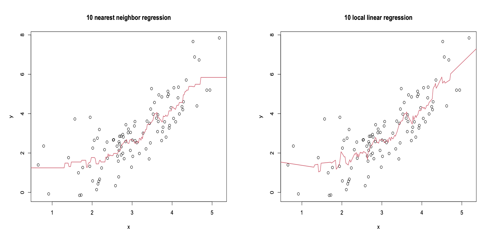
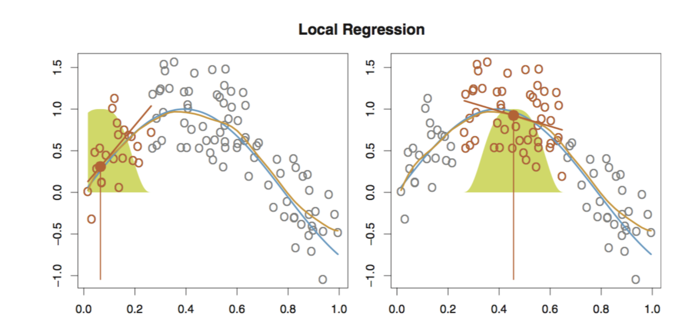
The blue curve is true \(f(x)\), and the light orange curve is the local regression \(\widehat{f}(x)\). The orange points are local to the target point \(x_0\), represented by the orange vertical line. The yellow bell-shape indicates weights assigned to each point. The fit \(\widehat{f}(x_0)\) at \(x_0\) is obtained by fitting a weighted linear regression (orange line segment), and using the fitted value at \(x_0\) (orange solid dot) as the estimate \(\widehat{f}(x_0)\).
A generalized additive model (GAM) allows a separate nonlinear function for each predictor while preserving additivity:
\[ y_i=\beta_0+f_1(x_{i1})+\cdots+f_p(x_{ip})+\varepsilon_i. \]
Each \(f_j\) could be:
Can be applied to classification problems.
Consider the wage data
\[ \text{wage}=\beta_0+f_1(\text{year})+f_2(\text{age})+f_3(\text{education})+\varepsilon. \]
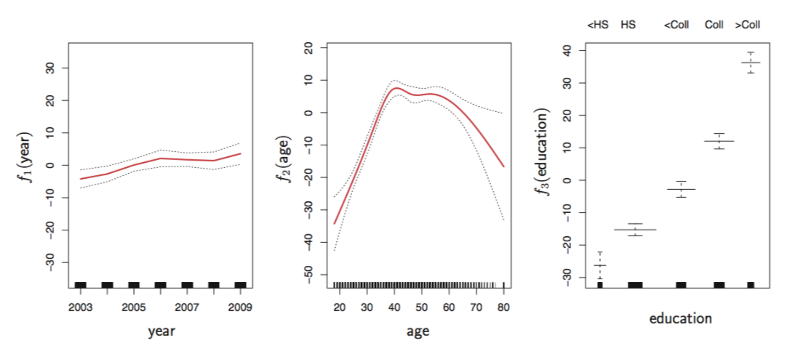
\(f_1\) and \(f_2\) are natural splines; \(f_3\) is a step function for the qualitative predictor education.
Gradient descent provides a general iterative approach for minimizing an objective function
Linear models can represent nonlinear relationships in the predictors by transforming the original features.
GAMs combine separate nonlinear functions of multiple predictors while retaining an additive and interpretable structure.
The amount of flexibility in these methods is typically controlled by a tuning parameter, which can be selected using cross-validation.
Next Week: Classification!
Announcements: Assignment 1 due Oct. 7